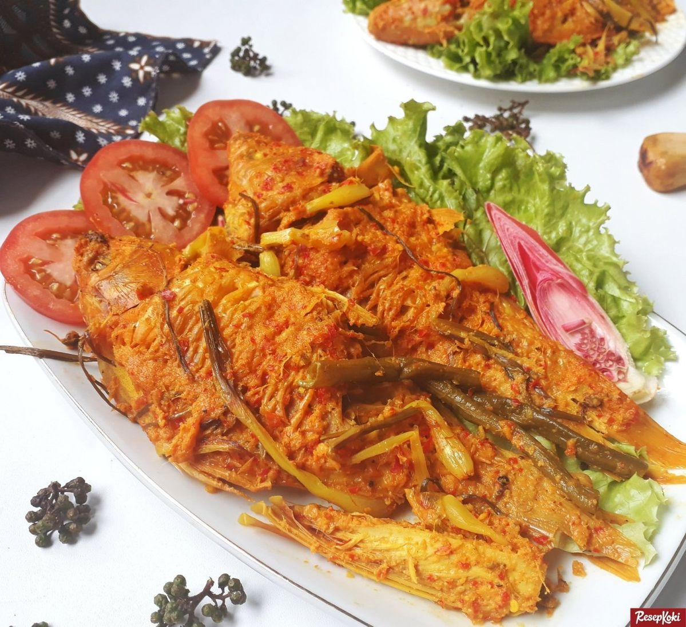
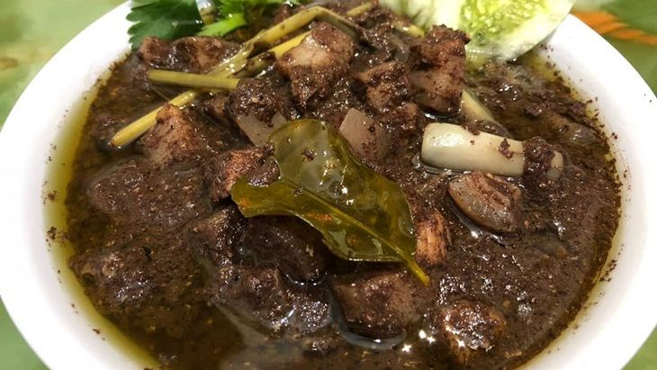
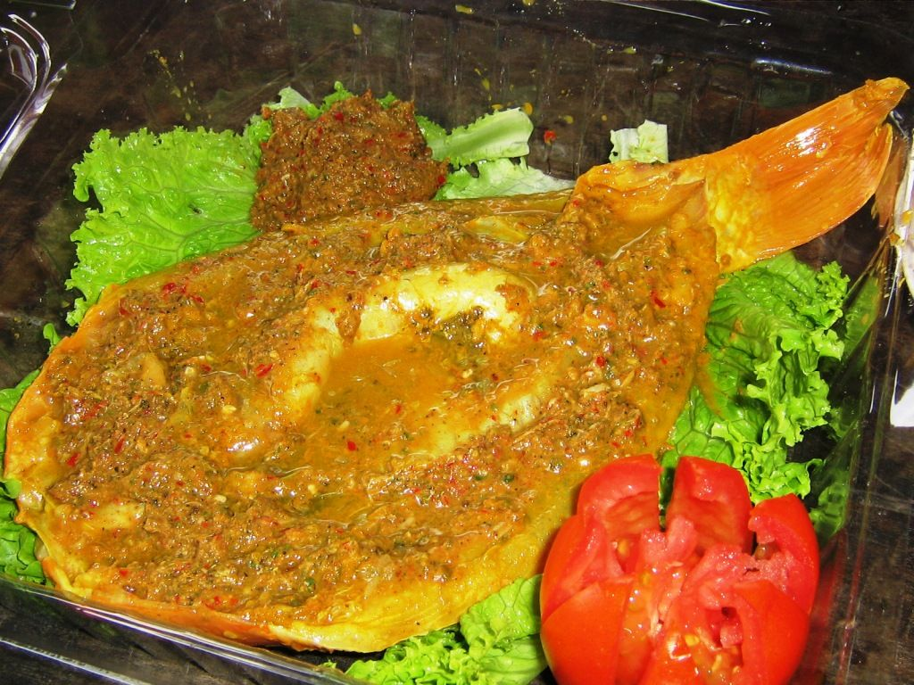

Ikan Mas Arsik
Ikan mas bumbu kuning khas Batak yang dimasak perlahan hingga kering dengan bumbu andaliman, asam cikala, dan bawang Batak. Rasanya gurih, asam, dan pedas getir.

Saksang
Masakan daging khas Batak yang dimasak dengan darah, santan, dan ketumbar serta rempah andaliman. Hidangan wajib yang selalu hadir di setiap perayaan seremonial Batak.

Dengke Naniura
Sashimi ala Batak. Ikan mas segar yang tidak dimasak dengan api, melainkan "dimatangkan" menggunakan fermentasi asam jungga dan racikan rempah super lengkap.

Mie Gomak
Mie lidi tebal yang kenyal disiram dengan kuah kaldu bersantan, kaya akan bumbu kari dan andaliman. Nama "gomak" berasal dari cara penyajiannya yang digenggam dengan tangan.

Dali Ni Horbo
Olahan susu kerbau segar yang dimasak hingga menggumpal menyerupai keju lembut, biasanya dibumbui dengan sari daun pepaya dan rempah kuning. Sangat gurih dan alami.